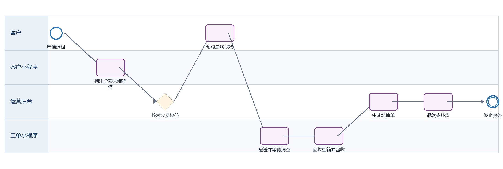
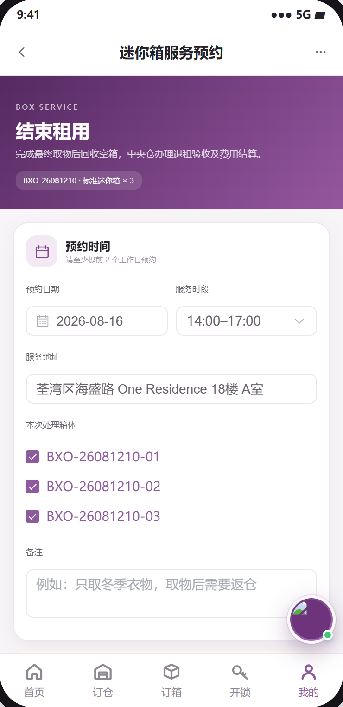
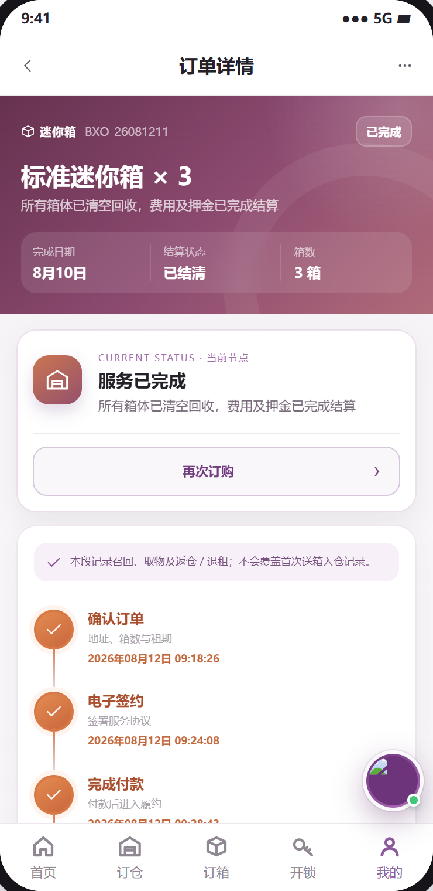

迷你箱退租 PRD
下载 Word 文档迷你箱退租 PRD
客户小程序研发详细需求规格 · V2.0 · 2026-09-08
定义迷你箱最终召回、客户清空、空箱回收、费用结算和服务终止。
| 属性 | 内容 |
|---|---|
| 文档编号 | MP-BX-05 |
| 适用端 | 客户小程序、运营后台、工单小程序及领域服务 |
| 范围 | 退租资格、最终取物预约、空箱回收、箱体清点、结算、退款和订单完成。 |
| 不在本模块范围 | 空箱维修翻新。 |
1 目标与边界
1.1 本期范围
退租资格、最终取物预约、空箱回收、箱体清点、结算、退款和订单完成。
1.2 不在本模块范围
空箱维修翻新。
1.3 角色与系统责任
| 角色或系统 | 职责 |
|---|---|
| 客户 | 浏览、选择、签约、付款、提交申请、查询进度 |
| 客户小程序 | 采集意图并展示服务端状态，不自行决定价格、库存、资格或审批结果 |
| 运营后台 | 维护主数据、价格、库存、可操作项、审批、异常处理和人工改派 |
| 工单小程序 | 承接送取、验收、搬仓、清仓等线下任务，回传节点、附件和异常 |
| 领域服务 | 保存订单、租约、箱体、预约、支付与合同的权威状态并发布事件 |
2 BPMN 业务流程

圆形表示开始或结束事件，圆角矩形表示任务，菱形表示服务端判断。
跨端节点必须先写入领域服务，再由事件刷新客户侧时间线。
3 状态机与准入
| 状态码 | 客户文案 | 进入条件 | 下一步 |
|---|---|---|---|
| APPLIED | 退租已申请 | 等待最终取物 | 预约 |
| FINAL_RECALL | 最终取物中 | 未清空箱体出库/配送 | 回收 |
| EMPTY_RETURNING | 空箱回收中 | 已清空并扫描 | 验收 |
| SETTLING | 结算中 | 全部箱体已核对 | 退款或补款 |
| COMPLETED | 已完成 | 订单和计费终止 | 终态 |
| EXCEPTION | 退租异常 | 缺箱、损坏或遗留物 | 人工处理 |
状态码是跨端契约，中文文案不得作为业务判断条件；写操作必须携带聚合版本并处理409冲突。
4 页面与交互
本节截图直接取自迷你仓小程序可交互原型的实际页面，不使用根据字段自行生成的示例图；业务权威值仍以服务端返回为准。
4.1 迷你箱退租申请
| 属性 | 要求 |
|---|---|
| 建议路由 | /pages/box/service?type=terminate |
| 入口 | 订单详情、到期提醒 |
| 页面字段 | 租期、到期日、全部箱体状态、未结预约、欠费、预计费用、最终地址/时段、退租原因、清空声明 |
| 主要操作 | 提交、取消 |
| 通用状态 | 骨架屏、空态、无网络、超时、无权限、数据已变化、提交中、提交成功和提交失败分别实现 |

4.2 最终取物与结算
| 属性 | 要求 |
|---|---|
| 建议路由 | /pages/order/detail |
| 入口 | 提交成功 |
| 页面字段 | 逐箱进度、最终运单、空箱回收、损坏/缺失、费用、押金、应退/应补、退款进度 |
| 主要操作 | 查看物流、确认结算、补款、联系客服 |
| 通用状态 | 骨架屏、空态、无网络、超时、无权限、数据已变化、提交中、提交成功和提交失败分别实现 |

5 业务规则
退租覆盖订单下所有未终止箱体；存在其他召回/返仓任务时先合并或等待完成。
最终取物后客户必须清空并归还空箱；工单逐箱扫描，缺箱或损坏计入结算。
全部箱体处于已回收或经后台确认报损后才允许停止周期计费。
退款原路退回；补款未完成时订单保持结算中。
完成后保留历史合同、支付、箱号和物流记录，但箱体解绑客户并进入待检测。
6 接口契约
| 方法 | 接口 | 用途 | 幂等要求 |
|---|---|---|---|
| GET | /box-orders/{id}/termination-quote | 查询退租资格和预估结算 | 否 |
| POST | /box-terminations | 创建退租与最终预约 | 是，clientRequestId |
| GET | /box-terminations/{id}/settlement | 查询逐箱结算 | 否 |
| POST | /box-terminations/{id}/settlement-confirm | 确认结算 | 是，settlementVersion |
通用响应包含code、message、data、traceId和serverTime。
金额使用整数最小货币单位；写接口校验登录身份、资源归属、幂等键和聚合版本。
错误码区分参数、资格、并发、锁定、支付确认、权限和服务不可用。
7 跨端交互和数据一致性
| 方向 | 规则 |
|---|---|
| 小程序到后台 | 只调用BFF或领域服务；后台通过同一业务编号处理。 |
| 后台到小程序 | 后台写领域状态并发布事件，小程序刷新权威状态。 |
| 后台到工单小程序 | 线下任务携带workOrderId、orderId、SLA和附件要求。 |
| 工单到客户小程序 | 扫码、附件和异常先回传领域服务，再生成客户可见时间线。 |
| 消息通知 | 只携带业务编号与深链，不下发敏感合同或门禁凭证。 |
7.1 领域事件
box.termination_applied
box.final_recall_started
box.empty_returned
box.termination_settlement_created
box.service_terminated
8 异常与恢复
| 场景 | 识别条件 | 客户侧与后台处理 |
|---|---|---|
| 存在活动任务 | 召回或返仓未完成 | 显示冲突任务并禁止重复提交 |
| 缺箱 | 回收数量不足 | 生成缺失费用与调查工单 |
| 箱体损坏 | 验收不合格 | 上传证据并计入版本化结算单 |
| 退款失败 | 渠道异常 | 转财务工单且客户可持续查询 |
9 非功能与安全
列表首屏P95不超过2秒，详情P95不超过1.5秒；长流程返回受理结果和异步进度。
敏感字段最小化展示，日志脱敏，下载资产使用短时签名URL。
所有状态变更记录前后值、操作者、来源端、原因码、时间和traceId。
支持简体中文、繁体中文、英文；日期、货币和地址按香港业务规范展示。
10 埋点与指标
| 事件 | 触发 | 关键属性 |
|---|---|---|
| page_view | 进入页面 | pageCode、source、orderId、businessType |
| action_click | 点击主要操作 | actionCode、statusCode、orderVersion |
| submit_result | 写操作完成 | requestId、result、errorCode、durationMs、traceId |
| flow_step_changed | 业务节点变化 | fromStatus、toStatus、eventId、operatorType |
11 验收标准
AC-01 申请页列出订单下全部未结箱体。
AC-02 存在冲突任务时不能创建第二个退租。
AC-03 逐箱回收结果可追踪。
AC-04 未补款不能结束订单。
AC-05 完成后箱体与客户解绑且周期计费停止。
12 研发交付清单
| 角色 | 交付物 |
|---|---|
| 产品与设计 | 页面状态稿、字段字典、三语文案和验收用例 |
| 小程序前端 | 页面、组件、登录恢复、状态处理、埋点和错误恢复 |
| 后端 | OpenAPI、状态机、幂等、权限、事件、补偿和审计 |
| 运营后台 | 配置、审批、异常处理、重试和人工兜底 |
| 工单小程序 | 任务、扫码、附件、节点回传和异常上报 |
| 测试 | 端到端、并发、权限、弱网、重复事件和补偿验证 |